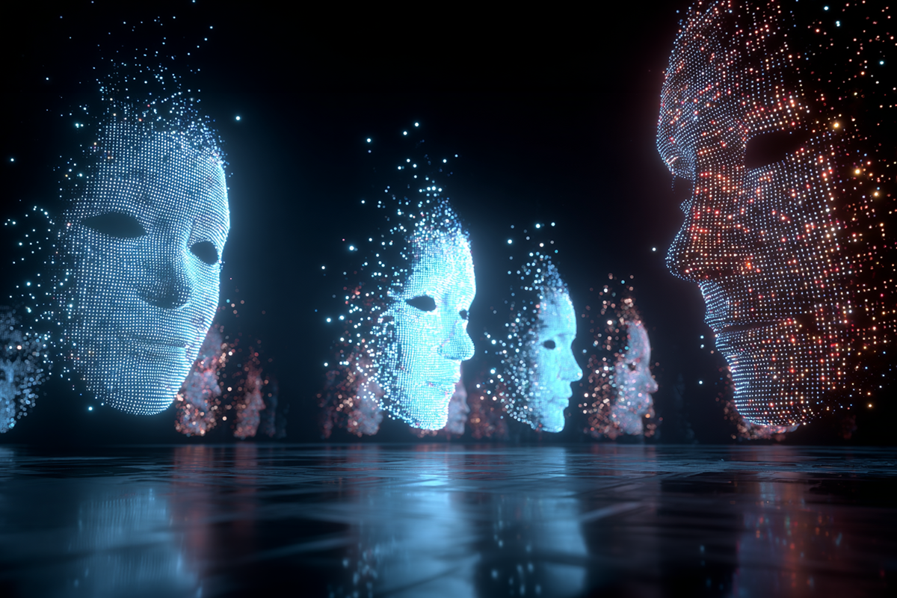
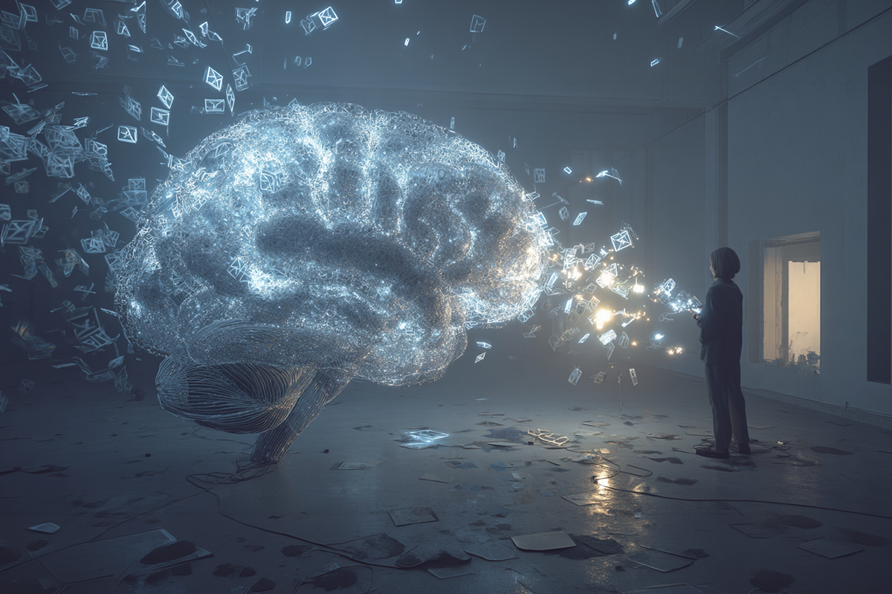
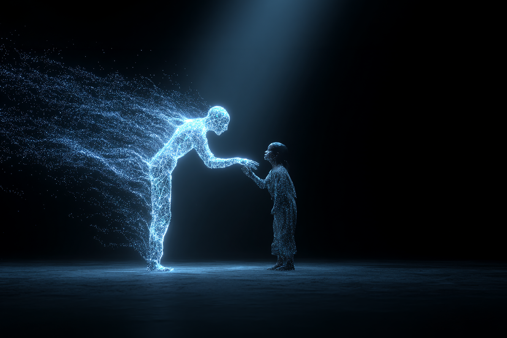

Cuando la IA sube al escenario
Tecnología, arte y lo que pasa cuando lo humano se mezcla con lo digital
Tecnología, arte y lo que pasa cuando lo humano se mezcla con lo digital

Por años, la tecnología en el arte estaba ahí, pero bien piola. Luces, sonido, efectos… Funcionaba perfecto, pero no era protagonista.
Hasta ahora.
Porque la inteligencia artificial ya no solo ejecuta: también propone. Puede escribir escenas, armar diálogos o tirar ideas que después terminan arriba de un escenario o en una pantalla. Y no es algo aislado: ya hay espacios como el Berlin AI Film Festival donde esto no solo pasa, sino que se celebra.
O sea, la IA no está mirando desde afuera. Ya se metió al juego.

Obvio que lo primero que uno piensa es: “ya, ¿y los artistas qué?”. Pero cuando lo miras con más calma, la cosa no va por ahí.
La IA no llega a borrar lo humano. Llega a meterse en el proceso como una especie de partner creativo. Ese que tira ideas, te desbloquea cuando estás pegado o te muestra caminos que no habías tomado en cuenta.
Pero no decide. Y eso cambia algo importante: crear ya no es solo partir desde cero, también es saber elegir entre todo lo que aparece.

Porque al final, alguien tiene que decir “esto sí, esto no”. Y ahí entra lo que la tecnología todavía no puede replicar del todo: la intuición, la experiencia, el contexto… esa cuestión media intangible que hace que algo realmente te pegue.
Por eso, más que reemplazar el arte, la IA lo está empujando a otro nivel. Lo vuelve más híbrido, más abierto, más experimental.

Si lo piensas, el arte siempre ha cambiado con la tecnología. Esto no es la excepción. Es solo que ahora lo estamos viendo en vivo y en directo.
Y en vez de verlo como una amenaza, quizás la gracia está en entender qué podemos hacer con esto.
Porque cuando la tecnología entra en el arte, no le quita lo humano.
De alguna forma, nos obliga a mirarlo mejor… y a preguntar qué es lo que realmente nos hace conectar.
 Tecnología
TecnologíaSi eres como yo y revisas TikTok e Instagram constantemente, te habrás dado cuenta de que estas redes son casi como un experimento social.
 Tecnología
TecnologíaHablamos mucho de inteligencia artificial. La tenemos integrada en nuestra vida, nos ayuda en nuestros trabajos y le preguntamos cosas de…
 Tecnología
TecnologíaDurante años hemos pensado en la inteligencia artificial como algo súper frío: servidores gigantes, computadores procesando datos y…